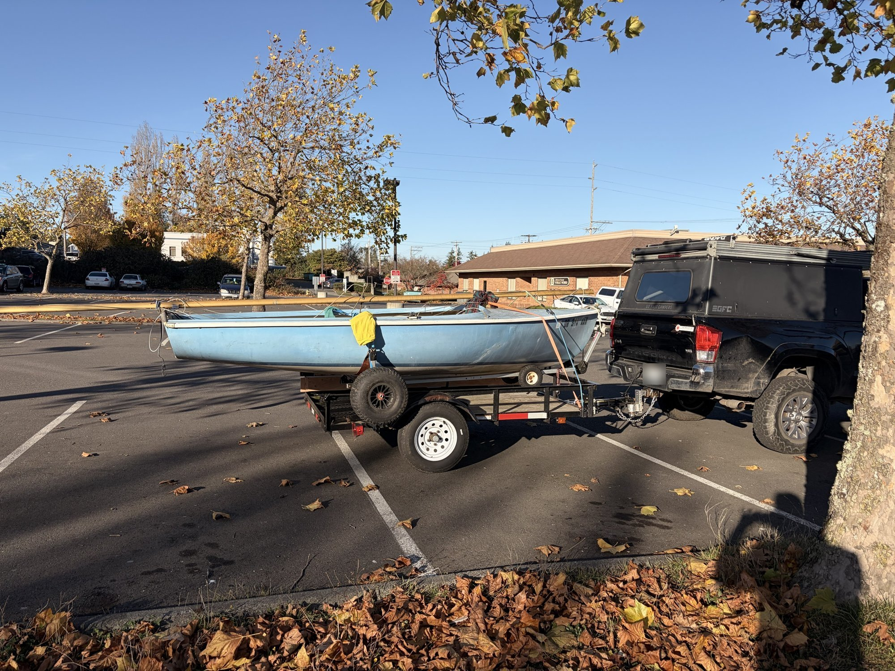
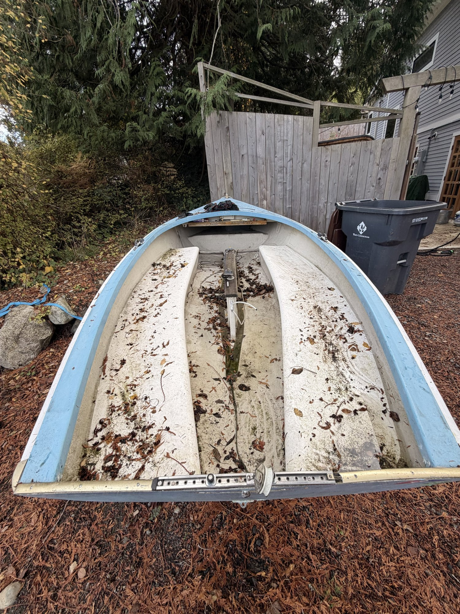
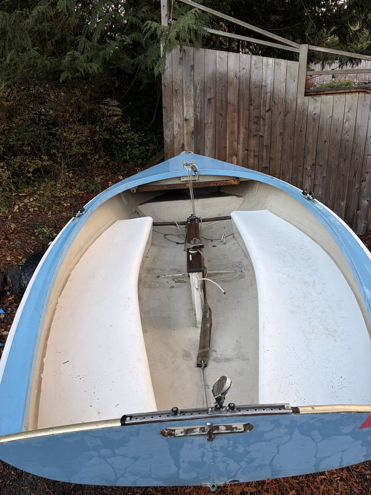
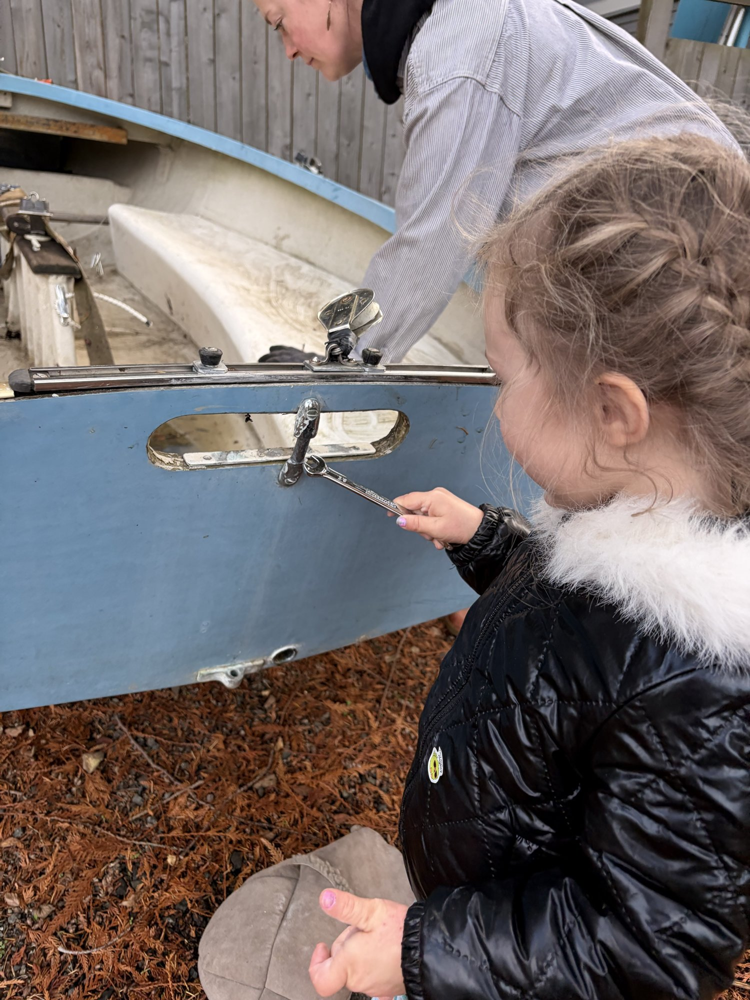
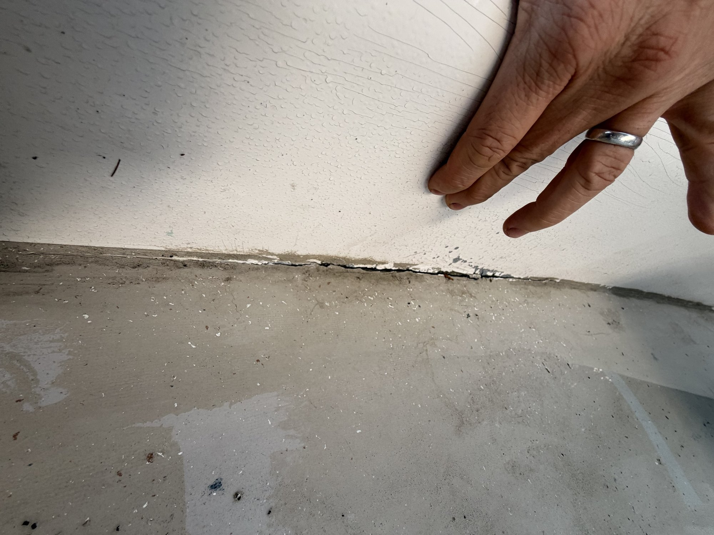
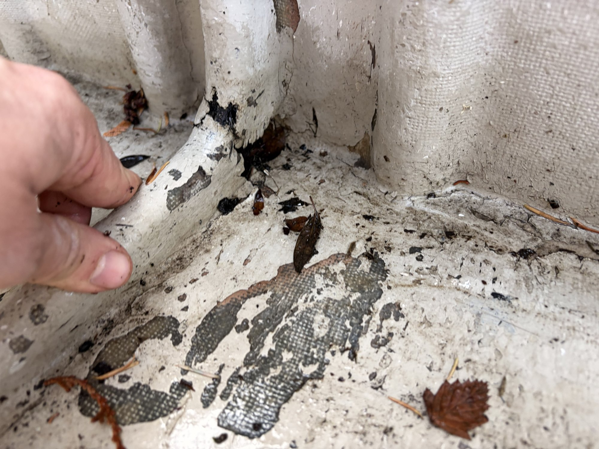
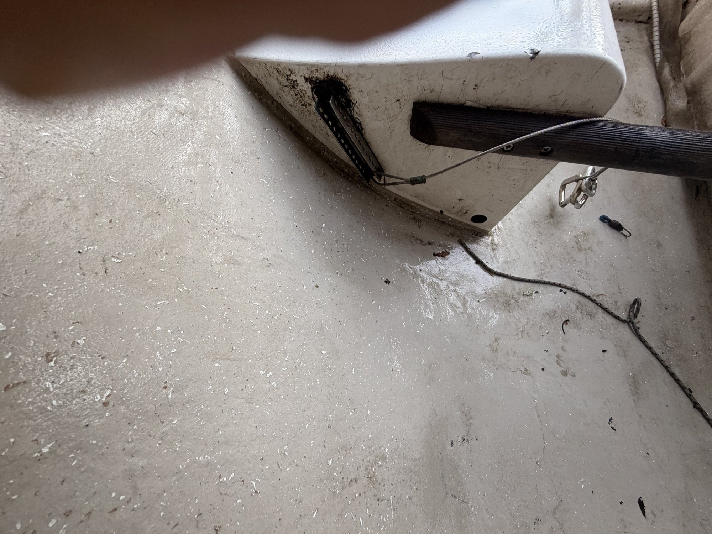
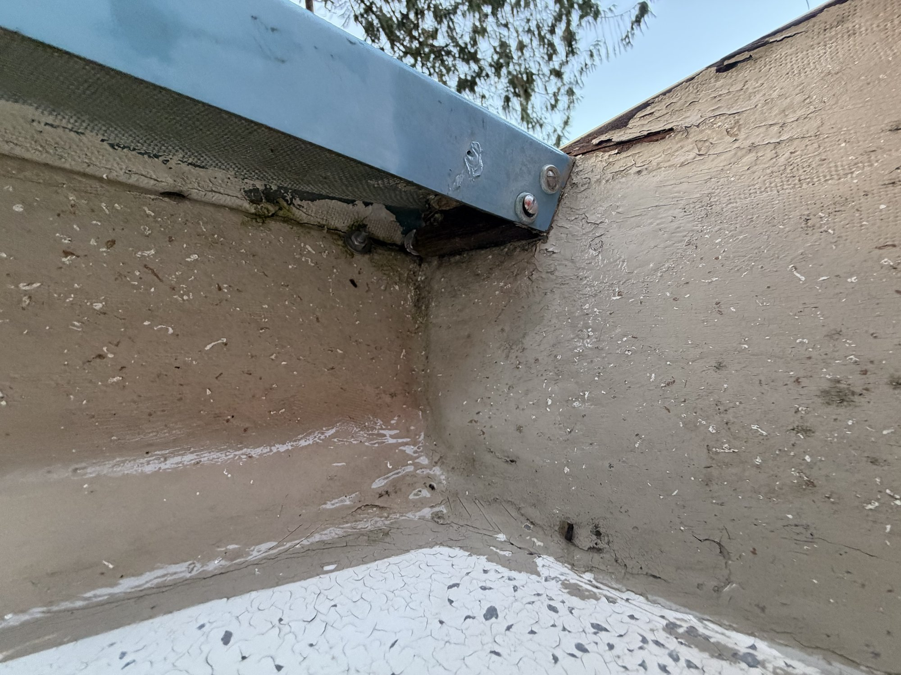

As a kid, my family had a Lido 14 that we kept at our cabin on Penn Cove. A lot of my formative sailing happened on that boat, and I've had a soft spot for the boat ever since.
When a friend of a friend mentioned that his aging father had a Lido he needed to get rid of, I was immediately interested. The boat hasn't been sailed regularly in some time, and it has been stored outside under a cover, on a dolly on the Key Peninsula. I got it for free, and I'm gonna see if I can't just get some value out of it.
A Lido 14 is stable and roomy enough to take my wife and my almost-three-year-old daughter out sailing.

I brought it home to Port Townsend a week ago. It's a bigger job than a quick cleanup, and I want to go into it with clear eyes.
I'll write updates here as the work goes along.
Why fix up an old boat
I could buy a new boat, or a newer one that someone has kept up well. That would be faster and easier. But I think there's value in learning the skills to restore and reuse old things, and I find it rewarding to bring something like this back instead of throwing it away.
Project Number 1: Cleaning day
I took the spars off, cleared out the leaves and debris that had collected inside, removed all the gear, and pressure washed the whole boat.
Part of that was just to see how it cleans up. Mostly, though, it was an inspection to see where the projects lie.


My kid is very stoked about getting out sailing. Naturally I want her to be a part of getting this boat on the water, and she jumped right in to “fixing” today.

What I found
There's a bit more work than I expected, but it still feels reasonable. Here's what clearly needs attention.
The “watertight” compartments. The bench seats are leaking where the bottom of each bench meets the hull. The seam has opened up, and in other areas the glass has delaminated. All of that needs to be sealed up. These benches form two-thirds of the positive flotation in the boat.


Centerboard trunk reinforcements. These look like wood wrapped in fiberglass, and the wood has rotted out. They'll need to be reinforced somehow, and more likely replaced.

The transom. I suspect the transom needs replacing, or at least the top few inches of its plywood.
Corner blocks. Small wooden blocks tie the side decks into the transom. They're rotted and need to be replaced.

While I'm in there
A few things aren't broken yet, but they're worth doing now.
Shroud plates. These are a common failure point on Lidos, and there's some softness around the hull in a few places. Replacing them seems wise.
Shroud-to-trunk reinforcements. Wooden reinforcements currently run between the shroud plates and the centerboard trunk. I may swap these for the metal versions that are available online.
Rigging. The standing rigging looks fine as far as I can tell. I'll probably replace some of the running rigging, but that's low priority for now.
Open questions
The foils. I haven't gotten a good look at the centerboard yet. The rudder is wood; it was painted at some point, but the paint is peeling and the wood underneath feels soft. I see three paths:
- Rehab the existing wooden foils.
- Replace the wooden parts with new wood.
- Switch to fiberglass foils, which are available.
Where to do the work. One of the biggest challenges won't be on the boat at all. Fiberglass work needs a dry, warm space, and I don't have a garage. Figuring that out is a project in its own right, and I'm looking forward to it.
Where things stand
All in all, it's looking pretty good. The hull cleaned up well and the problems I found are known, fixable ones. It's a big project, but I'm having fun and feeling excited about it.
So here's the deadline I'm setting myself: if the boat isn't sailing by July 1, 2027, it goes to the dump. That gives me a firm finish line and keeps the project from turning into a lawn ornament.
— Henry